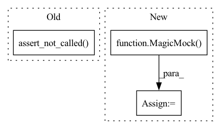

Pattern ID :35056
Before Change
recovery_checkpoint = mock_create_trainer.call_args[1]["resume_from_checkpoint"]
assert recovery_checkpoint == ml_runner_with_run_id.checkpoint_handler.trained_weights_path
mocks["run_training"].assert_not_called()
mocks["run_validation"].assert_not_called()
mocks["validate_model_weights"].assert_not_called()
mock_trainer.test.assert_called_once()
After Change
ml_runner_with_run_id.container.run_inference_only = True
ml_runner_with_run_id.container.run_extra_val_epoch = run_extra_val_epoch
assert ml_runner_with_run_id.checkpoint_handler.trained_weights_path
mock_datamodule = MagicMock()
with patch("health_ml.run_ml.create_lightning_trainer") as mock_create_trainer:
with patch.object(ml_runner_with_run_id.container, "get_data_module", return_value=mock_datamodule):
with patch.multiple(
ml_runner_with_run_id,In pattern: SUPERPATTERN
Frequency: 3
Non-data size: 3
Instances Fragment ID: 100124187
Project Name: microsoft/hi-ml
Commit Name: 3d632766440a7856712cb0ba40ee6f5cac9fd5c1
Time: 2023-01-18
Author: 37396332+kenza-bouzid@users.noreply.github.com
File Name: hi-ml/testhiml/testhiml/test_run_ml.py
M Class Name: AnonimousClass
N Class Name: AnonimousClass
M Method Name: test_run_inference_only(2)
N Method Name: test_run_inference_only(1)
M Parent Class:
N Parent Class:
M File Name: hi-ml/testhiml/testhiml/test_run_ml.py
N File Name: hi-ml/testhiml/testhiml/test_run_ml.py
M Start Line: 327
M End Line: 345
N Start Line: 382
N End Line: 407
Before Change
assert proposal.acceptance == [0.7, 0.8]
else:
proposal.compute_acceptance.assert_not_called()
proposal.evaluate_likelihoods.assert_not_called()
assert np.all(proposal.samples["logL"] == 0.0)
def test_populate_not_initialised(proposal):After Change
)
proposal.compute_acceptance = MagicMock(side_effect=[0.5, 0.8])
proposal.model = MagicMock()
proposal.model.batch_evaluate_log_likelihood = \
MagicMock(return_value=log_l)
proposal.plot_pool = MagicMock()
proposal.convert_to_samples = MagicMock(
side_effect=lambda *args, **kwargs: args[0] Fragment ID: 100124186
Project Name: mj-will/nessai
Commit Name: df638bbd58c045937979cbe3ccae1b7988a8dd77
Time: 2022-02-16
Author: michaeljw1@googlemail.com
File Name: tests/test_proposal/test_flowproposal/test_flowproposal_population.py
M Class Name: AnonimousClass
N Class Name: AnonimousClass
M Method Name: test_populate(2)
N Method Name: test_populate(2)
M Parent Class:
N Parent Class:
M File Name: tests/test_proposal/test_flowproposal/test_flowproposal_population.py
N File Name: tests/test_proposal/test_flowproposal/test_flowproposal_population.py
M Start Line: 339
M End Line: 386
N Start Line: 292
N End Line: 391
Before Change
if pool is not None:
proposal.evaluate_likelihoods.assert_called_once()
else:
proposal.evaluate_likelihoods.assert_not_called()
assert sorted(proposal.indices) == list(range(samples.size))
@pytest.mark.integration_testAfter Change
proposal.draw_proposal = Mock(return_value=x)
proposal.compute_weights = Mock(return_value=log_w)
proposal.model = Mock()
proposal.model.batch_evaluate_log_likelihood = \
MagicMock(return_value=log_l)
with patch("numpy.random.rand", return_value=u):
RejectionProposal.populate(proposal, N=N)
Fragment ID: 100124185
Project Name: mj-will/nessai
Commit Name: df638bbd58c045937979cbe3ccae1b7988a8dd77
Time: 2022-02-16
Author: michaeljw1@googlemail.com
File Name: tests/test_proposal/test_rejection.py
M Class Name: AnonimousClass
N Class Name: AnonimousClass
M Method Name: test_populate(2)
N Method Name: test_populate(3)
M Parent Class:
N Parent Class:
M File Name: tests/test_proposal/test_rejection.py
N File Name: tests/test_proposal/test_rejection.py
M Start Line: 70
M End Line: 105
N Start Line: 76
N End Line: 107